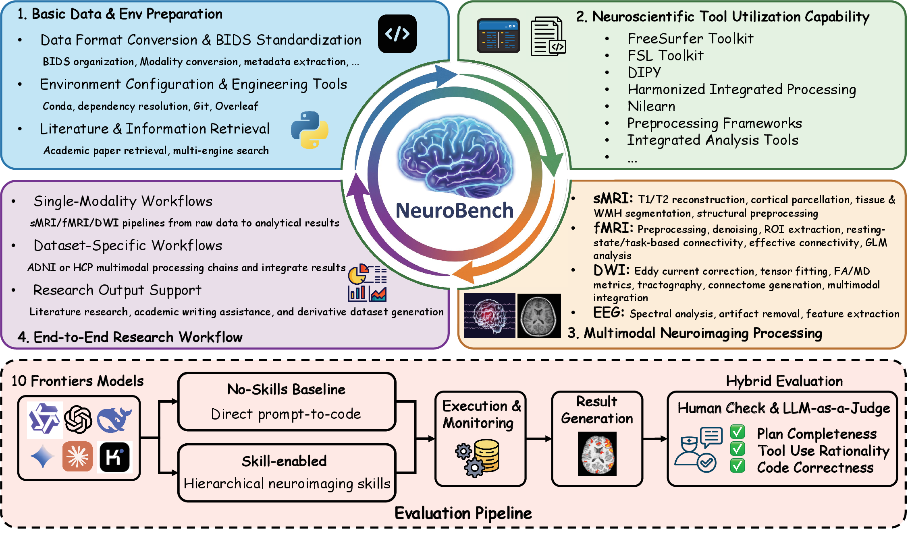
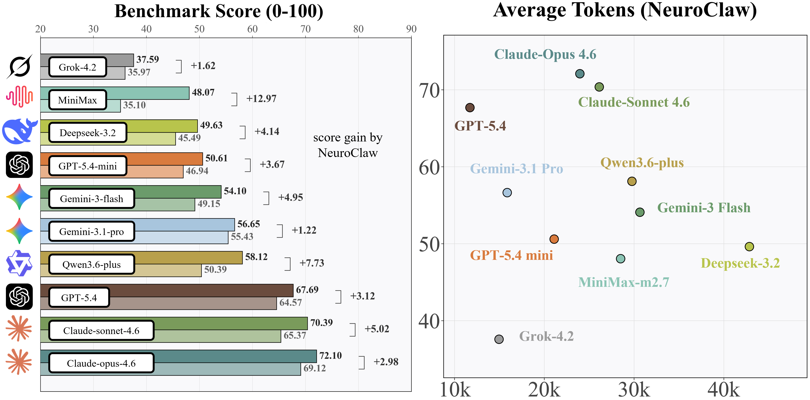

Coverage
Structural MRI, functional MRI, diffusion MRI, EEG, and multimodal integration tasks.
NeuroBench
NeuroBench is the benchmark suite used to evaluate end-to-end neuroimaging workflows, reproducibility readiness, and skill-guided execution.

Structural MRI, functional MRI, diffusion MRI, EEG, and multimodal integration tasks.
Planning quality, tool/skill reasonableness, code/command correctness, and reproducibility readiness.
Each task directory contains a task.md instruction file with explicit inputs, outputs, and checks.
Benchmark Runs
NeuroBench supports baseline and skill-enabled runs. You can execute it from the Web UI or from the CLI batch runner.
with-skills: use skills loaded from skills/.no-skills: run without skills for baseline comparison.--benchmark-compare-skills: run paired variants for the same tasks.output/.# Web benchmark mode
python core/agent/main.py --web --benchmark
# CLI benchmark batch runner
python core/agent/main.py --benchmark
# Paired skill comparison
python core/agent/main.py --benchmark --benchmark-compare-skills
Use --score-benchmark to score existing reports in output/ with a GPT-5.4 weighted rubric.
python core/agent/main.py --score-benchmark
python core/agent/main.py --score-benchmark --score-workers 8Each base model is evaluated under both with-skills (running within the NeuroClaw framework) and no-skills settings. The left panel below shows overall benchmark scores; the right panel shows the score-vs-token trade-off under with-skills.

Aabs denotes absolute score improvement over the no-skills baseline; g is the normalized gain (clipped to [-1, 1]).
| Base Model | With Skills (%) | No Skills (%) | Aabs (%) | g |
|---|---|---|---|---|
| Claude-Opus-4.6 | 72.10 | 69.12 | 2.98 | 0.0965 |
| Claude-Sonnet-4.6 | 70.39 | 65.37 | 5.02 | 0.1450 |
| DeepSeek-3.2 | 49.63 | 45.49 | 4.14 | 0.0759 |
| Gemini-3-Flash | 54.10 | 49.15 | 4.95 | 0.0973 |
| Gemini-3.1-Pro | 56.65 | 55.43 | 1.22 | 0.0274 |
| GPT-5.4 | 67.69 | 64.57 | 3.12 | 0.0881 |
| GPT-5.4-mini | 50.61 | 46.94 | 3.67 | 0.0692 |
| Grok-4.2 | 37.59 | 35.97 | 1.62 | 0.0253 |
| MiniMax-M2.7 | 48.07 | 35.10 | 12.97 | 0.1998 |
| Qwen3-plus | 58.12 | 50.39 | 7.73 | 0.1558 |
All ten base models improve when run within the NeuroClaw framework, with an average absolute gain of 4.74 points. The largest relative gains come from MiniMax-M2.7 (g = 0.1998), Qwen3-plus (g = 0.1558), and Claude-Sonnet-4.6 (g = 0.1450).
Run tasks first, then score the generated reports to analyze quality and efficiency.